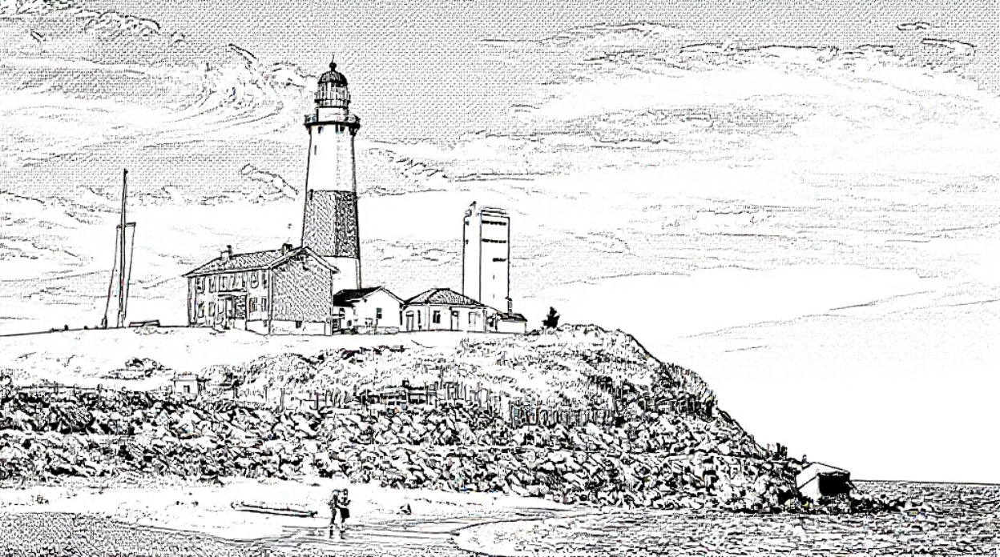
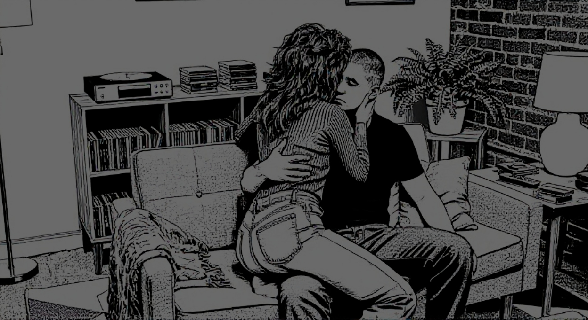

This is a work of fiction. Names, characters, places, and events are either products of the author’s mind or are used in a made-up way. Any likeness to real people, living or dead, or actual events is totally by chance.

My name is David. I was raised to operate at a higher level.
From an early age, I understood structure, expectation, and the necessity of precision. Others drifted. I did not.
That’s not arrogance; it’s just fact. In our upper-middle-class neighborhood on Long Island, most kids were comfortable drifting through life. I wasn’t.
My father, Aaron, commuted into the city every day, disciplined and pragmatic, a man who understood that reputation and achievement were everything. My mother, Betty, was a homemaker who devoted herself to raising us correctly. She ran the house with quiet precision—meals, routines, expectations. She didn’t need a corporate title; her job was building a family that succeeded. And we did.
In our house, success wasn’t debated. It was assumed.
I delivered. Honor roll year after year. Teachers used my name when they wanted to point to potential. On the baseball field, I liked the simplicity of dominance—the clean crack of the bat, the certainty of results. I learned early that I was ahead of most people around me, academically and otherwise.
Maura O’Brien fit neatly into the life I was building. She was cute, studious, organized—the quintessential nice girl. Not wild. Not reckless. She kept her head down, did her work, respected structure. Her father was a firefighter—steady, civic-minded. Her mother was a homemaker who kept their household warm and orderly. Maura wasn’t chasing thrills; she was planning a future. That aligned with me.

By junior year of high school, we were inseparable. Study sessions, long talks about careers, grad school, cities we might live in. When college acceptance letters arrived, everything fell into place. I was accepted into a prestigious business school outside Boston to study finance—exactly where someone like me belonged. Maura chose a public college ten miles away for communications. Close enough to maintain us. Logical.


Success wasn’t optional—it was assumed. That assumption became the foundation of everything that followed.
The first two years of college went exactly as expected. I immersed myself in finance—case competitions, internships, networking. I wasn’t just getting grades; I was building a serious trajectory. Maura did well too. We both made the honor roll. Weekends were ours—dinners, quiet nights, and walks across campus. From the outside, we looked unshakable.
By spring of 1993, pressure was mounting. Junior year. Recruiting conversations beginning. My world was expanding quickly.
And I cheated.
Not a kiss. Not some harmless flirtation. I slept with another woman.
It wasn’t complicated. I didn’t agonize over it. I didn’t re-evaluate my life. I was a high-performing finance student with a clear future, surrounded by opportunity. If I wanted something, I took it. That didn’t mean I stopped valuing Maura. It was a momentary lapse, barely a ripple in the trajectory I was building. Success demands flexibility; I never defected from Maura the way she would from me.
The afternoon Maura came to surprise me at school, she saw enough to understand what had happened. I didn’t see her. But she saw the woman leaving. She saw the intimacy.
Later, she called me. Her voice was shaking. She said she’d seen everything. She reminded me she’d chosen her college partly because of me. That she’d structured her life around us. She said she deserved better.
I denied it at first out of instinct. But she described too much.
Then she broke up with me.
That’s what stuck. Not the accusation. The decision. She walked away. As if she had the authority to close the door.
We both went home to Long Island for the summer. She ignored my calls. Weeks of silence. Eventually, after repeated apologies and assurances from me that it wouldn’t happen again, she agreed to try again.
During one of those tense conversations, she told me about Phil.
After hanging up on me that day, she’d gone to the library. Crying. Phil approached her. A guy she might have vaguely recognized from campus. He listened while she explained what had happened. He said things like “guys can be idiots.” Positioned himself as sympathetic.
After about twenty minutes of quiet conversation, he suggested they grab food and drinks—just something casual to help get her mind off everything. She agreed.
They ended up at a crowded bar near campus, loud and packed with students. They drank—beer for him, stronger cocktails for her. He stayed close, leaning in so his breath brushed her ear when he spoke, his hand resting on her arm, then her waist, guiding her through the crowd with a firm touch at the small of her back that lingered longer each time.
By the time they left, the alcohol had loosened them both. They walked back to his apartment under the cool night air.
Maura initially glossed over the rest, other than to tell me that they made out but did not fuck. After pressing her for the details she clearly didn’t want to share, she finally opened up a little. Her memory of the night was hazy from the alcohol, she said, but she remembered enough. What she didn't, I was left to fill in with my imagination...

Inside, they barely reached the couch before they were kissing hard and urgently. She straddled his lap, knees sinking into the cushions as his hands moved under her shirt, pulling it off and unclasping her bra so he could caress her bare breasts, thumbs teasing her nipples until they tightened. She could feel him growing hard beneath her, pressing insistently against her through his jeans as he rocked her hips forward, grinding her against him.
His hand slipped down, unbuttoning her pants and tugging them lower. His fingers found her already wet, stroking and sliding inside her while his thumb circled her clit. She was panting, moving against his hand as the pleasure built, her body responding even as her mind started to spin. He kissed down her neck, sucking at the skin, then took a nipple into his mouth, tongue and teeth working together while he kept fingering her deeper and faster.
He shifted beneath her, freeing himself from his jeans, hard and ready. Gripping her hips, he started to lift her, positioning her right above him, the head of his cock nudging against her slick entrance.
That was when she broke.
Tears suddenly spilled down her cheeks. Her body went rigid. She pulled back, shaking her head. “I can’t… I’m sorry, I can’t do this.”
He froze, hands still on her hips. The moment shattered. She climbed off him, fumbling to get dressed with trembling fingers while the tears kept coming. He didn’t push. After an awkward silence, he drove her back to campus in quiet, the radio the only sound between them.
She presented it as heartbreak. As a moment of weakness.
I saw it differently.
Yes, I had slept with someone else. But I hadn’t defected. I hadn’t sought emotional comfort. I hadn’t invited another woman into my vulnerability. What she did felt reactive and disloyal.
She allowed another man into my space—into the vulnerability that belonged to the life I had structured for us. Phil hadn't just listened; he had tried to claim what was mine by right. That moment wasn't weakness on her part. It was the first fracture in the world that was supposed to orbit my achievement. Even if little physical happened, the intent was there. I felt it like a theft of my future.
And Phil—Phil had knowingly stepped into that space.
She broke up with me as if she had the authority. That assumption—that anyone could close a door on me—planted the seed. Not anger. Clarity. The universe had tested whether I would accept ordinary rules. I would not.
That’s when the grudge formed.
By October ’93 my anger had hardened into something surgical. I wasn’t raging. I was hunting. Phil had tried to take what was mine—had put his hands on Maura, had leaned into the exact vulnerability I had structured for us—and then vanished like the disposable nobody he was. I needed to find the man who thought he could trespass in my future and remind him, eventually, that nothing stays hidden from someone who operates at a higher level.
I drove past the apartment complex Maura had described. Hundreds of identical units. I sat in my car for hours, watching. Eventually a neighbor let slip that he had moved out. No forwarding address. Of course the coward had slithered away.
I checked her yearbook. Nothing. The registrar stonewalled me. Phone books, 4-1-1—dead ends. Every list of names I saw, I scanned for “Phil” like a predator checking for fresh scent. He had slipped the noose.
One random afternoon I was killing time at Dunkin’ Donuts waiting for Maura to finish whatever tedious errand she was on. I picked up a discarded copy of the Middlesex News and flipped through it out of boredom. And there, in a small public-announcement box, was his name. Phil. Promoted to Deputy Director at City Hall in the next town over. The universe had just handed me the next thread.

The following afternoon I walked into that building composed, polite, asking routine questions about permits at the front counter while my eyes mapped every hallway. Then he emerged from the back.
I knew it was him instantly. The same posture, the same smug, sympathetic face that had leaned in close to Maura while she cried over my lapse. I didn’t speak to him. Confrontation would have been sloppy. I simply memorized him—face, voice, gait—like cataloguing a specimen.
Over the next several weeks I returned at irregular intervals, always careful, always invisible. I learned his arrival time, his lunch habits, the exact route he drove home. Twice I followed him at a safe distance. Both times he stopped at the same car dealership a few miles away. He spent too long talking to one young saleswoman. They stood close. They laughed. It looked personal. It looked like another man trying to claim what didn’t belong to him.
An idea crystallized, clean and vicious.
I went back to the dealership during business hours, pretended to browse, and when the saleswoman stepped away I lifted one of her business cards.
Liza.
The plan was simple and satisfying: return on a weekend, ask for her by name, win her over, fuck her, record it if possible, and mail the evidence straight to Phil’s desk at City Hall. A direct, symmetrical repayment for what he had tried to do to me through Maura. He would feel exactly what I had felt—except this time the theft would be complete.
I returned the following Saturday and asked for Liza.
She no longer worked there. No forwarding information. No one knew where she had gone.
I called again later under a different pretext. I drove past every nearby business. Nothing.
The trail went cold.
I sat in my car outside the dealership, hands tight on the wheel, and let the frustration settle into something colder and more permanent. Another woman—another loose, opportunistic slut like the ones who would later fill my tapes—had slipped away before I could use her properly. It didn’t matter. The universe had already shown me the shape of things. People like Liza existed to be used and discarded. People like Phil existed to be corrected.
The grudge didn’t weaken. It simply learned patience.
And I kept looking.
Nearly a year passed. By May of 1995, Maura and I were still together, grinding through the slow, ugly work of pretending the fracture had healed. We were out of college, living separately with roommates, a year into our first real jobs. Another two years of careful performance would pass before we moved in together. My finance career was already accelerating exactly as planned—structured, ruthless, inevitable.
My uncle from the Boston north shore handed me the keys to his modest summer house near Cape Cod. Cedar shingles, tucked away in the pines, fifteen minutes from the beach but a universe removed from anyone who mattered. Downstairs: the standard rooms. Upstairs: two bedrooms and a bar stocked with bottles no one would miss. It was perfect. Isolated. Private. A place where the rules I refused to live by simply didn’t apply.

Josh and I started slipping down there on weekends. Sometimes Maura and Josh’s girlfriend came along, laughing like everything was normal. Most times it was just us—two wolves shedding their weekday skins. When it was only the two of us, we hunted the local bars after dark. Women came back easily. The sea air, the isolation, our practiced charm. I wanted to keep the moments. Not as memories. As proof. Proof that I could take what I wanted and preserve it forever.
I knew who to ask. Back in the city, near Grand Central, I found the right electronics hole-in-the-wall. The wiry guy behind the counter didn’t need much explanation. He understood the assignment. Pinhole camera for the VCR. Black-and-white for low light. No audio—federal wiretap laws were for lesser men. He showed me the A/B switch, the concealment tricks, the Sharpie trick to kill the glowing lights. Cash only. No receipt that mattered.


I installed the rig in the bar in under fifteen minutes the next trip down. That same night the system performed flawlessly. Josh watched the playback and grinned like a man who’d just been handed the keys to the kingdom.
I ordered two more rigs the next day. Full setups for the bedrooms. My little empire of evidence was expanding.

Then, a few weeks later, the first Sunday evening after Memorial Day, Josh and I walked into Casino-By-The-Sea in Falmouth. Packed. Loud. Perfect.
And there she was.

Liza.
Eighty miles from the dealership where I’d first seen her with Phil. I did a double-take, then nudged Josh and laid it out fast—Phil, City Hall, the failed plan. He got it instantly.
We approached smooth. Confirmed it was her. Her friend was Mandy. Both locals. Both bored. Both open.
Drinks flowed. Conversation turned filthy. They agreed to follow us back to the house.
The videos were never just trophies anymore. They were leverage. Insurance. Proof that the universe owed me and I was collecting.
Back at the house the music stayed low. I’d wanted Liza—the direct strike at Phil—but Josh had claimed her and disappeared. I got Mandy by default. It didn’t matter. Liza was still under my roof, still being recorded. That was enough.
Mandy and I were left in the upstairs bar, drinks in hand, the low thrum of music eching off the walls.
I asked what she'd studied in college. Accounting, she said, but she wasn't good at it. I brought up the basic accounting equation—assets equal liabilities plus equity. Asked her to explain it. She stared at me blankly, her mouth slightly open, and after a long pause said she didn't remember what that meant. She'd taken two semesters and couldn't explain the first thing they taught you.
Her accent was pure Massachusetts South Shore—flattened r's, stretched vowels, the lazy way "Cape" came out like "Kay-ape" and "car" like "cah." The kind of accent that said her family had been here for generations and not one of them had ever done anything worth leaving for. She sounded like every townie girl who'd max out at a waitress job and a husband with a drinking problem and a house she'd spend the rest of her life complaining about.
I asked about work. Waitressing, she said. Bouncing around. Nothing steady.
She had nothing else. No thoughts. No curiosity. She had taken classes and learned nothing. Worked jobs and retained nothing. She was a void in a denim jacket, waiting for someone to fill her.
I stopped trying. Let the silence stretch. She didn't notice.
I leaned in to kiss her, but the smell hit me before my lips touched hers—stale cigarettes on her breath, sour and thick. I turned my head, put my mouth against her ear instead.
"Let's go to the bedroom."
Better to put my cock in her pussy than my tongue in that smelly mouth.
She stood up, grabbed her drink for one last sip, and followed me without a word. Following was what I figured she did best.
Mandy was compliant the second the door clicked shut. She had that soft, overused look: dark untamed hair, a body already going slack in her twenties from too many nights and too many men. Her hips and belly carried extra padding that jiggled faintly when she moved—the kind of ruined softness that came from being ridden hard and put away wet far too often.
I stripped her without ceremony. She lay back, legs spreading in lazy invitation, eyes half-lidded like she was already bored with the transaction. A used thing, offering itself because that was all she knew how to do. She mumbled her two rules like she still had any power: nothing in her ass, and she wasn't sucking dick tonight. I didn't argue. I simply pushed her legs wider and drove into that sloppy, well-fucked cunt in one hard thrust.

She gasped once, then went quiet again—already checked out, her soft body accepting the pounding without resistance. I watched her face as I fucked her. Nothing. No fire. No hunger. Just the slack, empty compliance of a woman who had spread her legs for so many men she no longer remembered how to want.
I didn't give a fuck about her pleasure. This was revenge. Every thrust into Mandy was a direct fuck-you to Phil, because next door Josh was buried balls-deep in Liza—the very woman Phil desired. I was claiming the prize he craved, still marking territory he'd tried to steal from me through Maura.
But even as I watched her heavy tits jiggle, even as I felt my own pleasure building, something was missing. I had imagined this moment for two years—the symmetry of it, the justice. And here it was: Mandy beneath me, Liza next door, Phil's world being unmade in real time. Yet Mandy just lay there, a dead lay, her pussy as loose and indifferent as her gaze. No fight. No awareness that she was being used as a weapon. Just a fat, lazy slut taking cock because that was Tuesday for her.
The satisfaction I'd expected never came. Only the mechanical release of my own body, the low grunt as I unloaded deep inside her. I pulled out and left her lying there, legs still splayed, my load leaking from her used-up, sloppy hole onto the sheets like the well-fucked, brainless slut she’d always been.

The next morning over coffee, Josh mentioned he’d talked to Liza before she left. Single. No boyfriend. No Phil connection. Just two local sluts out for free drinks and dick.
The revenge fantasy I’d nursed for two years evaporated in that kitchen. There was no rival to wound. No direct betrayal to punish.
Josh shrugged it off. “At least it wasn’t a wasted night.”
Outwardly I agreed. Inside, the truth sharpened into something colder. The lack of connection didn’t erase the violation—it proved the universe had been mocking me the entire time. Maura had let chaos in through Phil’s circle. Mandy was just the next link in the chain. The grudge hadn’t died. It had simply grown teeth.
Josh never saw Liza again.
For the next month I kept Mandy on call—convenient, emotionless, a step above jerking off. Sometimes I’d text her to come over even when I wasn’t in town just to see if she’d jump. She usually did. She was useful. A warm hole when I needed one. A cum dumpster with a pulse.
Eventually she stopped answering. I assumed she’d found the next cock. Didn’t matter. She and Liza faded into the background noise—irrelevant the moment they stopped serving a purpose.
The Cape house stayed. The cameras stayed. Maura’s original sin with Phil stayed.
And I kept collecting.
It wasn’t about revenge anymore. It wasn’t even personal. It was procedural. Clinical. Every weekend we set the cameras the same way—same angles, same concealment, same cold efficiency. Before we left for the bars I’d flip the switch, activate the VCRs, and know that whatever happened would be preserved forever. Proof that I controlled outcomes. Proof that ordinary rules were for ordinary men.
Maura’s lapse with Phil remained the silent benchmark. Every new tape was another quiet fuck-you to that night in 1995. I had never lost control. I had simply been patient while the universe caught up.

None of it touched my real life. Monday mornings I was back in the city in pressed shirts, closing deals, building the reputation that would carry me for decades. Josh did the same. We never discussed the tapes beyond logistics. It was understood. Compartmentalized. Clean.
Eventually the house had to go. My uncle sold it. I handed back the keys without a word. No ceremony. Just another asset repositioned.

Around the same time life kept marching forward on schedule. Josh married his girlfriend. I married Maura. Weddings, photos, families beaming like everything was perfect. We had children. Mortgages. Promotions. The surface looked exactly like the success I had always assumed.
The tapes were boxed up and stored in a storage cabinet along with other files in my home office. Out of sight, but never out of mind. By 2003 the VHS felt prehistoric. I spent quiet nights digitizing every single one onto encrypted drives. Originals destroyed. Risk eliminated. Control absolute.
I offered Josh copies. He wanted his deleted. Didn’t bother me. I didn’t need his validation. I obliged, but kept Liza's. The collection was mine now. Private. Safe. I could watch whenever I wanted, on my terms, and feel that old thrill of absolute ownership.
But it wasn’t enough.
I started seeking others who operated on the same level. The Cape house tapes had given me currency—premium material, real amateur footage, not the scripted garbage that passed for porn in those days. I found forums where men like me gathered. Men who understood that the rules were suggestions for the weak. We traded footage. We shared techniques. We swapped stories about the sluts who'd crossed our paths and the ways we'd made them pay.
I became known in those circles. My material was sought after. In return, I gained access to theirs.
The forums evolved over the years—from encrypted IRC channels to darknet markets to private Signal groups with rotating handles and dead-drop protocols. The technology changed, but the appetite never did. By 2016, I had built relationships with men who didn't just collect trophies. They collected leverage. And they had skills I lacked.
There was V., a Ukrainian expat in Chicago who could crack iCloud backups in under an hour. There was the group out of Phoenix who specialized in social engineering—posing as tech support, as old friends, as anyone necessary to get the target to hand over the keys themselves. There was the kid in San Fran, barely twenty-five, who'd built a reputation for physical surveillance so clean it never touched the digital realm.
We weren't really friends. We were co-investors in a shared enterprise.
Then later that year, social media would rip open the old wound and hand me everything I needed to finish what I'd started.